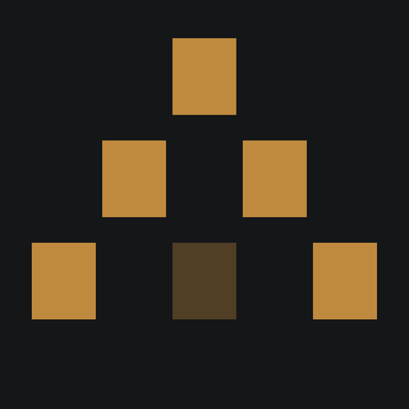

Brand
Two marks. The project mark is loud enough to survive a package listing; the organization mark is quiet enough to sit in a GitHub avatar. Both are built on a 64 × 64 grid with whole-pixel coordinates, mitred joins and no rounded corners.
Project — RungerHeimdall

Strata
Six blocks arranged into an upward wedge, with a gap between every piece. The lower centre block is held at low opacity: a layer that is present but must not be crossed. This is the project mark used in the site header, the hero, the favicon and the NuGet package icon.
The mark is drawn from filled rectangles, not strokes, so it keeps its shape at 16 px.
Amber #C08A3E on dark #141618.


Organization — Rungerheimdall

Concentric
Three nested realms with the innermost one filled. Territory, seal, runic stone. This is the organization mark: it appears in the GitHub organization avatar and in the site footer, never as the product icon.
Drawn as filled polygons so the joins stay mitred at any size. The 460 px export is the GitHub avatar master; a transparent version is included for other surfaces.


System
Color
Usage
- The project mark is always Strata. Do not substitute Concentric for product surfaces.
- The organization mark is always Concentric. It may appear next to the project name, never inside a package icon.
- Minimum size: Strata 16 px, Concentric 32 px.
- Do not recolor the marks. Do not place either mark on a photographic background.